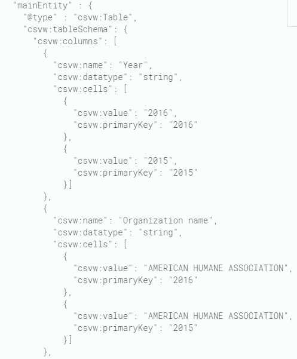

January 2020
“Tell me that data scientists are increasingly spending 50% of their time considering the ethical and social impacts of their work.” twitter.com/ldodds/status/…
Google Dataset Search in Beta: "For pages that embed tabular datasets, you can also create more explicit markup ... using CSVW ("CSV on the Web", see W3C)" developers.google.com/search/docs/da…

Excellent blog post! ”By taking a historical perspective, we must commit to retire antiquated, inaccurate models for clinical trials and transition to an elegant activity-centric model for clinical trials data.” twitter.com/nomini/status/…
One more podcast episode for the walk Critical Thinking in Data Science (with Debbie Berebichez) av DataFramed soundcloud.com/dataframed/cri…
Rainy Saturday afternoon. Time to get some more steps on my new-year-gadget @fitbit Listening to a podcast about Pandas with @wesmckinn and @hugobowne #lifelonglearning datacamp.com/community/podc…